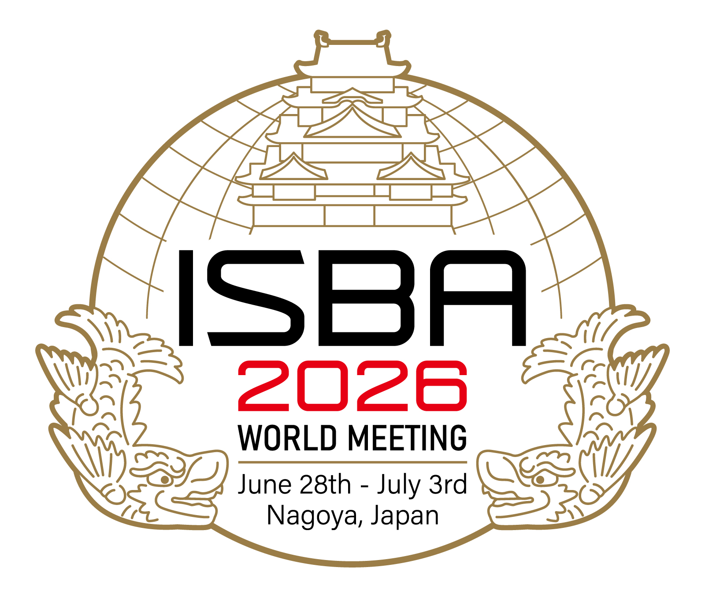
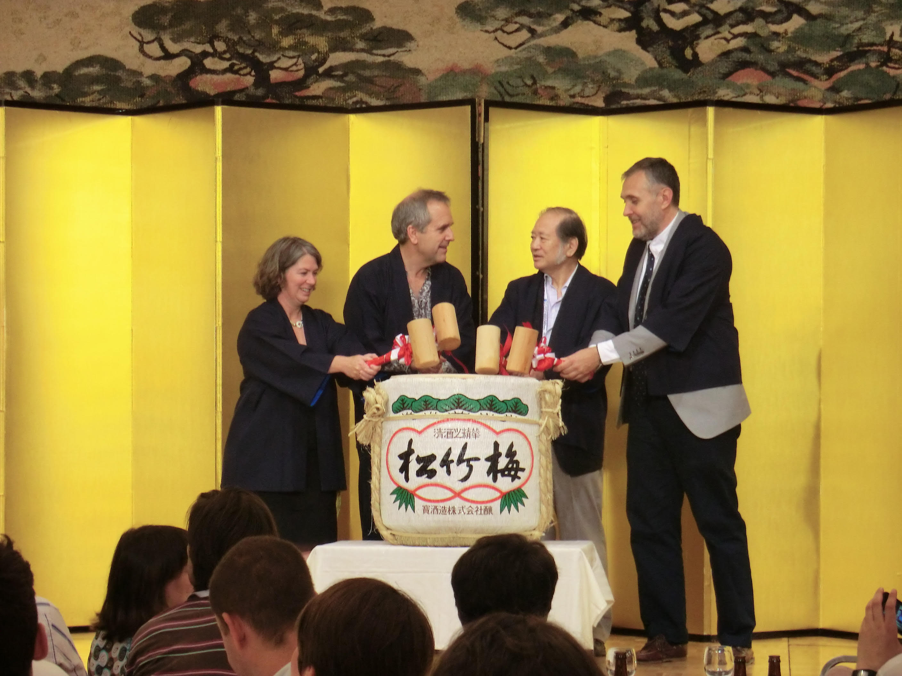

The ISBA 2026 Local Organizing Committee is delighted to host the official Conference Banquet at the prestigious Nagoya Marriott Associa Hotel. This evening will be the pinnacle of our conference, celebrating the community through Japanese cultural traditions and the recognition of academic excellence.
Located directly above Nagoya Station, the Nagoya Marriott Associa Hotel offers stunning views and world-class hospitality. The banquet will be held in one of the hotel's elegant ballrooms, providing a sophisticated backdrop for our final evening together.
The banquet serves as the formal occasion to recognize outstanding contributions to the field of Bayesian statistics. Please join us as we honor the recipients of various ISBA awards and celebrate the remarkable academic achievements within our global community. This is a must-attend event to celebrate our colleagues' success.
A highlight of the banquet will be the Kagami Biraki, a traditional Japanese sake barrel-opening ceremony. This ritual symbolizes harmony and good fortune. We are proud to feature premium sake from Kinsuisho (金水晶), a renowned brewery from Fukushima Prefecture.

Kagami Biraki ceremony at ISBA 2012 in Kyoto
Following the ceremony, guests will enjoy a refined full-course French dinner prepared by the hotel’s master chefs. The menu showcases high-quality seasonal ingredients, offering a culinary experience that perfectly complements the evening's celebrations.